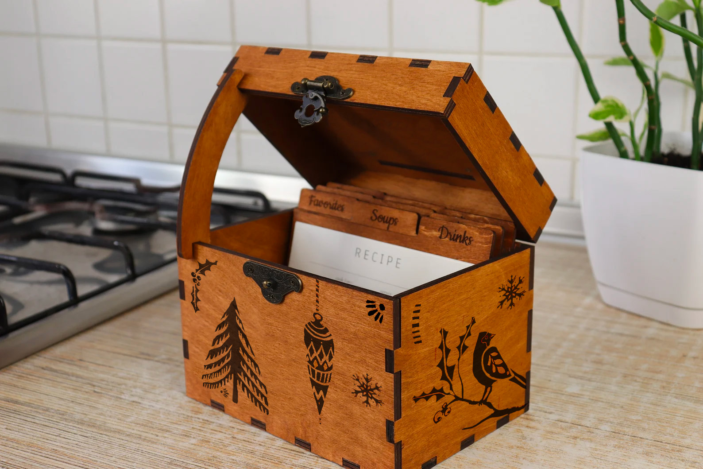
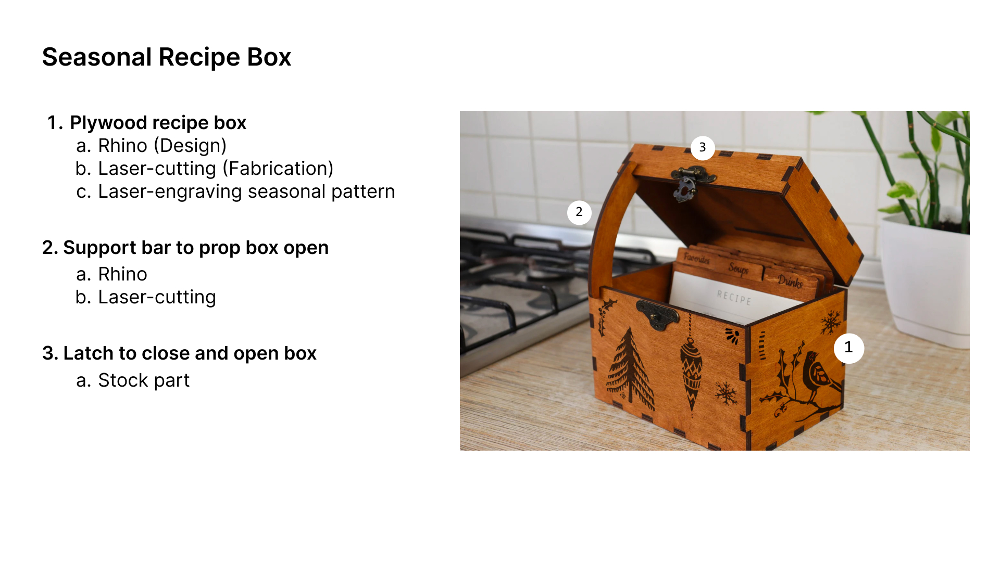
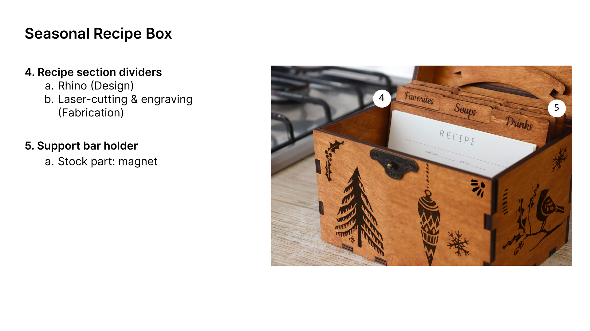
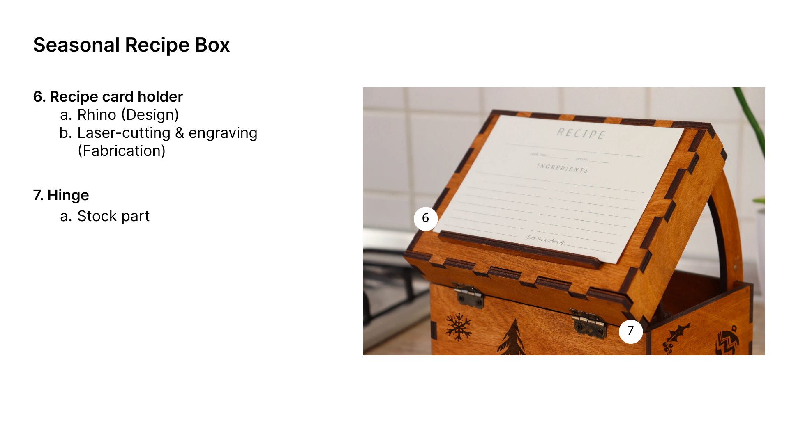
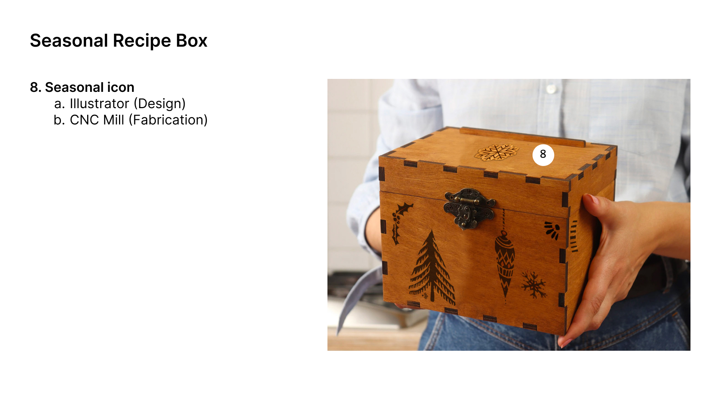

Idea
For my final project, I'm going to create a seasonal recipe box for index-card sized recipes to keep on my kitchen counter. Ultimately, I would like to create four boxes, one for each season. For the purpose of this assignment, my plan is to create at least one.
Problems with digital recipe aggregator solutions
1. I have to wake up the phone periodically with my dirty fingers.
2. I have to dig through a bunch of annoying ads and text on the website to get to the actual recipe.
3. There are plenty of apps that are great at aggregating recipes, but none are great for “in-the-moment” referencing. I've been using Notion app for recipe aggregation up till now. In addition to the problem where the screen goes black every few minutes, I have to tap on a bunch of folders and links to get to the actual recipe.
4. My partner is a novice in the kitchen and lazy with cooking. If it takes too much brainpower and more than a few steps to find a recipe, he's going to revert to ordering takeout.
Use Case
The seasonal recipe box will be used in my kitchen for storing and accumulating recipes for favorite dishes. More than the digital equivalent, the recipe card box will enable simple, distraction-free, hands-free, sharing, contribution and reference during cooking.
Component & Task Breakdown
   Box Design & Dimensions
Made for 4x6 recipe cards.
Luckily, it was easy for me to find ai and svg files online for laser-cut recipe box templates.
Instead of creating the design from scratch, my plan is to start with one of the preexisting templates as a base and make necessary modifications (e.g. adding the recipe card rest, adding the illustrations for engraving...etc.).
Timeline
Contingency Plan
Bill of Materials
Special Thanks
As always, a HUGE thank you to Junchao! For your availability and responsiveness and for teaching me about the "Contour" command in Rhino. I always learn something new everytime I talk to you.
Thanks to Sara Cagle for her friendship and support throughout the week and for sharing amazing learning resources.